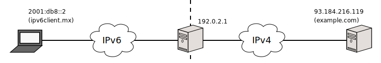

Documentación > Herramienta de configuración de Jool > Parámetros > --session
--session
Índice
Descripción
Mediante el mecanismo de sesiones el NAT64 decide cuando las entradas BIB pierden validez y deben de ser eliminadas. Mediante estas puedes saber exactamente quien le está hablando a tus nodos de IPv6.
Cada registro BIB es un mapeo, en el cual se guarda la relación entre un servicio en IPv4 y otro en IPv6. Para cada entrada BIB, hay cero o mas registros de sesiones. Estas representan las conexiones activas (BIBs en uso).
Este comando solo es informativo y con éste puedes obtener información detallada de cada una de tus conexiones.
Sintaxis
jool --session [--display] [--numeric] [--csv] <protocols>
jool --session --count <protocols>
Opciones
Operaciones
--display: Lista las tablas de sesión. Operación por omisión.--count: Lista la cantidad de registros por tabla de sesión.
<protocols>
<protocols> := [--tcp] [--udp] [--icmp]
El comando aplica sobre la(s) tabla(s) específica(s). Si no se indica, entonces afecta a los tres protocolos.
--numeric
La aplicación intentará resolver los nombres del nodos remotos hablando en cada sesión. Si tus nameservers no estan respondiendo, esto retardará la salida.
Utiliza --numeric para desactivar este comportamiento.
--csv
La aplicación muestra la información en un formato amigable para la consola.
Utiliza --csv para imprimir en formato CSV para abrirse como hoja de cálculo.
En el formato CVS cada registro es impreso en una sola linea. Te recomendamos esta opción si requieres usar el comando grep para filtarar la información.
Ejemplos

El cliente ipv6client.mx efectua dos solicitudes HTTP y un ping al servidor example.com en IPv4.
Para desplegar todas las sesiones activas en los tres protocolos, resolviendo nombres y con formato consola, ejecutar el siguiente comando:
$ jool --session
TCP:
---------------------------------
(V4_FIN_V6_FIN_RCV) Expires in 2 minutes, 57 seconds
Remote: example.com#http ipv6client.mx#58239
Local: 192.0.2.1#60477 64:ff9b::5db8:d877#80
---------------------------------
(V4_FIN_V6_FIN_RCV) Expires in 3 minutes, 52 seconds
Remote: example.com#http ipv6client.mx#58237
Local: 192.0.2.1#6617 64:ff9b::5db8:d877#80
---------------------------------
(Fetched 2 entries.)
UDP:
---------------------------------
(empty)
ICMP:
---------------------------------
Expires in 50 seconds
Remote: example.com#1402 ipv6client.mx#13371
Local: 192.0.2.1#1402 64:ff9b::5db8:d877#13371
---------------------------------
(Fetched 1 entries.)Ahora, filtra UDP e ICMP, muéstrame las IP numéricas y formato estándar:
$ jool --session --display --tcp --numeric
TCP:
---------------------------------
(V4_FIN_V6_FIN_RCV) Expires in 2 minutes, 57 seconds
Remote: 93.184.216.119#80 2001:db8::2#58239
Local: 192.0.2.1#60477 64:ff9b::5db8:d877#80
---------------------------------
(V4_FIN_V6_FIN_RCV) Expires in 3 minutes, 52 seconds
Remote: 93.184.216.119#80 2001:db8::2#58237
Local: 192.0.2.1#6617 64:ff9b::5db8:d877#80
---------------------------------
(Fetched 2 entries.)Sin resolver nombres, guarda todo en formato CSV al archivo session.csv:
$ jool --session --display --numeric --csv > session.csvPara concluir, solo muestra el número de registros de todas las tablas:
$ jool --session --count
TCP: 2
UDP: 0
ICMP: 1